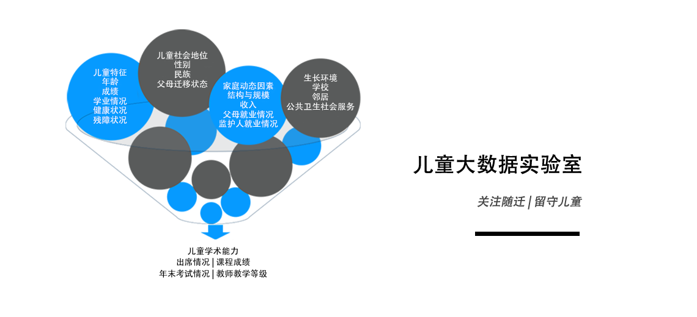

贵州伯克利大数据创新研究中心（以下简称“GBIC”）是中国首个民生大数据分析研究中心，由美国加州伯克利大学、国家工业和信息化部电子第一研究所、贵阳市人民政府以及国内外顶级学术机构的专家学者通力合作建成，设立于贵州省贵阳市国家高新技术产业开发区，同时在美国加州伯克利大学设有分支机构。GBIC由贵州省市政府、国内外公共财政及企业提供资金支持。
GBIC在扶贫、教育、健康、旅游等民生福利领域开展变革性创新研究，特别是针对困难群体，GBIC通过多项可持续发展的研究项目，从解决区域性问题出发，研究制定有利于全国推广的可行性方案。同时，GBIC与美国加州大学社会利益信息技术研究中心（CITRIS）开展深入合作，加速创新与成果转化，共同探索二十一世纪前沿技术方法及企业发展促进方案，从而加快向政策与实践的转化，促进企业独立快速发展。
GBIC建立了功能强大的社会福利计算实验室，通过提供以下功能来支持GBIC的科学研究和产业孵化：
数据采集：通过与政府和企业合作获取和转换所需数据。
数据存储：维护用于安全数据存储的基础架构，以适应不断进行的数据采集，并生成持续增长的纵向数据资源。
数据管理：开发和执行标准化和可复制的工作流程，用于从多个来源进行数据清洗、加工、融合。
数据分析：创建一个用于建立多种模型的计算代码库，能快速地进行实验室数据挖掘，从而为政府部门、科研单位、产业合作伙伴以及其他合作者提供其所需信息和数据分析产品。
资源管理：协调、配备、支持有效可行的实验室运作的专业人员和软硬件设备。
实验室管理方法：提高工作效率的软硬件设备（服务器、个人计算机和显示器、共享打印机、人体工学型办公桌和办公椅、白板、参考手册等）；社会数据类型和位置（行政数据、网络数据、社交媒体、通信数据等）；大数据管理（Hadoop、Spark等）；数据安全；数据连接方法（基于规则、概率性、机器学习、消歧网络）；数据源联络人（与数据生产者不断沟通，以获取和了解数据的意义）。
高级建模：引导和进行代表复杂社会现象模型的建立，包括对高级建模（潜在类模型、多层次模型、自然语言处理、网络统计、监督和无监督性机器学习、非线性时间序列、贝叶斯统计、空间模型）；模型理论和假设；高级可视化和建模过程（选择适当的模型和算法、选择和生成基于问题的变量和参数、阐明方程、处理缺失、缩放变量、测量模型性能和模型调整）。
产生结果：通过分布式编程保证团队生产力（解析工作以快速准确的完成）；管理和记录生产力；促进编码思维（帮助技术人员进行逻辑思考；解决建模问题）；管理实验室日常（每日会议、监督、娱乐、创建团队、认可、鼓励）；共享文件管理（促进团队合作和可复制性工作、确定条例、多人访问）；制定和执行工作流程预期；促进持续性学习。
促进社会研究：通过了解知识产生的步骤和计算的作用来支持社会研究人员（文献综述、阐明研究问题、建立假设、收集/识别合适的数据）；根据已知研究结构开发有意义的变量；了解相关性和因果关系；并了解在数据与社会生活相关时数据科学的伦理道德（例如，提供正式和现场培训、监督合规性、报告身份等）。
随着人口老龄化、预期寿命延长、传统的孝顺价值观念加剧、生活成本上涨以及地域流动性增强，中国未来老年人的健康和护理需求得不到充分地保障，这是GBIC重点关注的社会民生问题。
GBIC在前期分析研究基础上，完善分析过程中更为准确且全面的数据需求，提出利用大数据来开展以下项目研究：概述老年人的个人特征、家庭环境、邻里特征及服务可及性；调查各区域老年人的基本健康状况和医疗服务使用情况；确定影响老年人健康和生活质量的多层次预测指标。这项研究的成果能引导制定相应的政策和服务，解决老年的健康和社会保障需求。
重点关注“留守儿童”及“学龄儿童”的分析研究
留守儿童”已成为当今社会关注的一个热词。越来越多的研究表明，留守儿童在学术和心理社会方面面临着比普通儿童更多的问题。原因不仅是家庭、学校环境本质上对儿童的影响，而且这些因素之间存在着潜在的相关性和差异性，因此，留守儿童并不总是比农村与父母同住的儿童表现更差。
从未来的研究方向、潜在计划以及政策选择来看，对“留守儿童”群体的研究模式是具有挑战性的。该研究结合家庭背景、学校经验和其他环境支持的数据源信息，关注城市和农村之间的潜在差异。这种研究模式提供了指导方案和政策举措不均衡的立足点。从根本而言，该研究模式提出了关于儿童是否应该作为独特的干预对象问题。这种研究模式旨在更好地了解学校方面的因素对留守儿童及其他流动人口群体的影响，以及深入了解卫生部门和其他部门对留守儿童及其他流动人口群体所产生的影响。